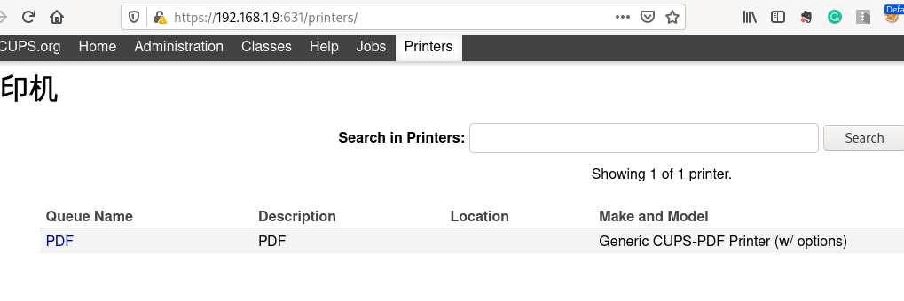

为Linux安装虚拟PDF打印机
今天发现一个 CUPS-PDF 项目,可以为 CUPS(Common Unix Printing System) 添加 PDF 打印机.
步骤非常简单:
安装
CPUS-PDFsudo apt install -y cups-pdf
根据 CPUS-PDF的文档说明, 需要设置
cups-pdf的所有者为root,且权限为0700sudo chown root:root /usr/lib/cups/backend/cups-pdf sudo chmod 0700 /usr/lib/cups/backend/cups-pdf
重启CUPS服务
sudo systemctl restart cups.service
可以通过修改
/etc/cups/cups-pdf.conf的OUT参数来设置pdf的输出位置### Key: Out (config) ## CUPS-PDF output directory ## special qualifiers: ## ${HOME} will be expanded to the user's home directory ## ${USER} will be expanded to the user name ## in case it is an NFS export make sure it is exported without ## root_squash! ## on Ubuntu, the cupsd AppArmor profile needs to be updated ## to match the output path as per instructions in LP:147551 ### Default: /var/spool/cups-pdf/${USER} Out ${HOME}/PDF
然后在CUPS的admin页面中就能看到一个PDF打印机了

或者用
lpstat来查看:lpstat -p -d
printer PDF is idle. enabled since Sat 11 Apr 2020 09:52:10 PM HKT system default destination: PDF
使用
lpr打印一个文件试试lp ~/dead.letter
request id is PDF-5 (1 file(s))
ls ~/PDF
dead.letter__2_PDF-job_5.pdf
- 最后要注意的是，根据 README 的说明，客户端选择打印机时，供应商应该选择
Postscript, model选择Color Printer